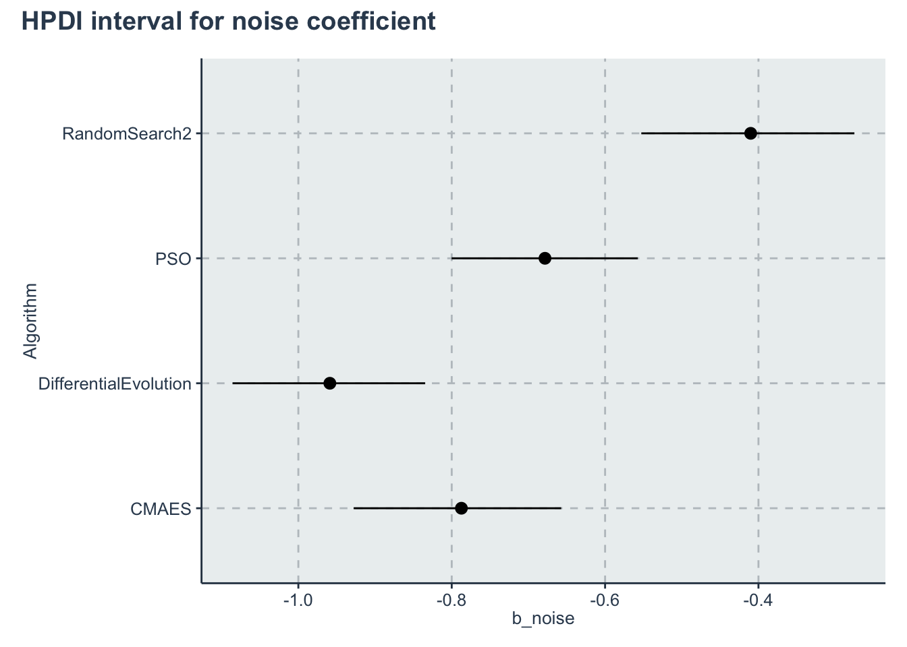
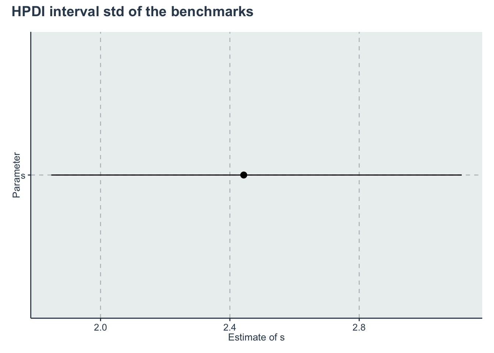

Chapter 5 Time to complete
In this section, we will consider the Cox’s Proportional Hazard model for analyzing the time to converge to a a solution (in number of iterations).
*RQ1: **What is the average number of function evaluations that it takes for an algorithm to converge to a solution at a precision of \(\epsilon=0.1\)? Here we will utilize a window of 100,000 function evaluations per dimension (the budget).
RQ2: What is the impact of noise in the number of function evaluations?
5.1 Data preparation
We start importing the dataset
Filtering the data that we want and applying some transformations
d <- dataset %>% dplyr::filter(OptimizationSuccessful == TRUE & MaxFevalPerDimensions == 1e+05 &
(Algorithm == "PSO" | Algorithm == "CMAES" | Algorithm == "DifferentialEvolution" | Algorithm ==
"RandomSearch2")) %>% dplyr::select(Algorithm, CostFunction, Event = "SolveAt1e-1",
simNumber, Ndimensions, SD, SolvedAtIteration = "SolveEarlierAt1e-1") %>% dplyr::mutate(y = SolvedAtIteration/Ndimensions,
Event = as.integer(Event), CostFunctionID = create_index(CostFunction), AlgorithmID = create_index(Algorithm)) %>%
dplyr::select(Algorithm, AlgorithmID, CostFunction, CostFunctionID, SD, Event, y, -simNumber,
-SolvedAtIteration, -Ndimensions)
algorithms <- get_index_names_as_array(d$Algorithm)
bm <- get_index_names_as_array(d$CostFunction)The data should look like this:
kable(dplyr::sample_n(d, size = 10), "html", booktabs = T, format.args = list(scientific = FALSE),
digits = 3) %>% kable_styling(bootstrap_options = c("striped", "hover", "condensed"))| Algorithm | AlgorithmID | CostFunction | CostFunctionID | SD | Event | y |
|---|---|---|---|---|---|---|
| CMAES | 1 | ThreeHumpCamelBack | 24 | 3 | 0 | 11.0 |
| DifferentialEvolution | 2 | ChenV | 3 | 0 | 1 | 2863.0 |
| PSO | 3 | ZakharovN2 | 30 | 0 | 1 | 96.5 |
| RandomSearch2 | 4 | Damavandi | 5 | 3 | 0 | NA |
| DifferentialEvolution | 2 | Shubert | 21 | 0 | 1 | 585.5 |
| PSO | 3 | ExponentialN2 | 7 | 0 | 1 | 1.0 |
| DifferentialEvolution | 2 | Trefethen | 25 | 3 | 0 | 84933.5 |
| CMAES | 1 | Schwefel2d20N2 | 16 | 0 | 1 | 89.0 |
| CMAES | 1 | ChenV | 3 | 0 | 0 | NA |
| DifferentialEvolution | 2 | ChenBird | 2 | 3 | 0 | NA |
5.2 Stan model
The Stan model is specified in the file: './stanmodels/timetoconverge.stan'
// Time to converge, Cox regression model
// Author: David Issa Mattos
// Date: 23 June 2020
//
//
data {
int <lower=1> N_total; // Sample size
real y[N_total]; // iteration where it was solved
int event[N_total]; // Indicates if the event occured or not
//To model each algorithm independently
int <lower=1> N_algorithm; // Number of algorithms
int algorithm_id[N_total]; //vector that has the id of each algorithm
//To model the influence of the noise
real x_noise[N_total];
//To model the influence of each benchmark
int <lower=1> N_bm;
int bm_id[N_total];
}
parameters {
//Fixed effect
real a_alg[N_algorithm];//the mean effect given by the algorithms
real b_noise[N_algorithm];//effect of noise
// //Random effect. The effect of the benchmarks
real a_bm_norm[N_bm];//the mean effect given by the base class type
real<lower=0> s;//std for the random effects
}
model {
//Fixed effect
a_alg ~ normal(0,10);
// //Random effects
s ~ exponential(0.1);
a_bm_norm ~ normal(0,10);
for (i in 1:N_total)
{
//uncensored data
if(event[i]==1) target += exponential_lpdf(y[i] | exp(a_alg[algorithm_id[i]] + s*a_bm_norm[bm_id[i]] + b_noise[algorithm_id[i]]*x_noise[i]));
//censored data
if(event[i]==0) target += exponential_lccdf(y[i] | exp(a_alg[algorithm_id[i]] + s*a_bm_norm[bm_id[i]] + b_noise[algorithm_id[i]]*x_noise[i]));
}
}Let’s compile and start sampling with the Stan function. In the data folder you can find the specific data used to fit the model after all transformations "./data/timetoconverge-data.RDS"
Note that stan does not support NA in the data, so we have two options… We either replace NA for a value and add conditionals in the model (note that this value will not be used). Or we separate the data frame in two parts, censored and not not-censored. We will do the first approach replacing the NA by 0.
dstan <- d %>% dplyr::mutate(y = replace_na(y, 0))
standata <- list(N_total = nrow(dstan), y = dstan$y, event = dstan$Event, x_noise = d$SD, N_algorithm = length(algorithms),
algorithm_id = dstan$AlgorithmID, N_bm = length(bm), bm_id = d$CostFunctionID)
saveRDS(standata, file = "./data/timetoconverge-data.RDS")For computation time sake we are not running this chunk every time we compile this document. From now on we will load from the saved Stan fit object. However, when we change our model or the data we can just run this chunk separately
5.3 Diagnosis
a_alg <- c("a_alg[1]", "a_alg[2]", "a_alg[3]", "a_alg[4]")
b_noise <- c("b_noise[1]", "b_noise[2]", "b_noise[3]", "b_noise[4]")
rstan::traceplot(timetoconverge_fit, pars = a_alg)


Another diagnosis is to look at the Rhat. If Rhat is greater than 1.05 it indicates a divergence in the chains (they did not mix well). The table below shows a summary of the sampling.
kable(summary(timetoconverge_fit)$summary) %>% kable_styling(bootstrap_options = c("striped",
"hover", "condensed"))| mean | se_mean | sd | 2.5% | 25% | 50% | 75% | 97.5% | n_eff | Rhat | |
|---|---|---|---|---|---|---|---|---|---|---|
| a_alg[1] | -5.0613996 | 0.0157814 | 0.4560554 | -5.9648678 | -5.3565507 | -5.0671857 | -4.7771710 | -4.1191871 | 835.1080 | 1.0059471 |
| a_alg[2] | -6.3414200 | 0.0157765 | 0.4539939 | -7.2424630 | -6.6317677 | -6.3496712 | -6.0581270 | -5.4164012 | 828.0941 | 1.0067278 |
| a_alg[3] | -6.2728790 | 0.0159023 | 0.4566207 | -7.1798165 | -6.5678209 | -6.2849249 | -5.9858838 | -5.3405945 | 824.4971 | 1.0064357 |
| a_alg[4] | -8.9236906 | 0.0160332 | 0.4656145 | -9.8527233 | -9.2297362 | -8.9294489 | -8.6299670 | -7.9744463 | 843.3587 | 1.0065466 |
| b_noise[1] | -0.7860677 | 0.0006585 | 0.0678371 | -0.9215398 | -0.8307742 | -0.7847312 | -0.7398537 | -0.6572384 | 10612.7997 | 0.9999942 |
| b_noise[2] | -0.9581764 | 0.0005810 | 0.0659688 | -1.0919712 | -1.0009872 | -0.9569834 | -0.9131543 | -0.8322398 | 12892.0779 | 1.0000365 |
| b_noise[3] | -0.6789703 | 0.0006821 | 0.0611909 | -0.8038079 | -0.7194895 | -0.6772081 | -0.6375569 | -0.5625861 | 8047.7954 | 0.9999387 |
| b_noise[4] | -0.4095699 | 0.0007824 | 0.0721207 | -0.5565661 | -0.4568533 | -0.4082483 | -0.3602928 | -0.2740744 | 8497.8242 | 1.0000011 |
| a_bm_norm[1] | -7.0877389 | 0.0749785 | 2.3831719 | -11.9757364 | -8.6159193 | -6.9973773 | -5.4510546 | -2.6669323 | 1010.2686 | 1.0082755 |
| a_bm_norm[2] | -5.9245341 | 0.0741209 | 4.2518131 | -15.6367452 | -8.4127182 | -5.4917162 | -2.9632739 | 1.1536322 | 3290.5399 | 1.0014992 |
| a_bm_norm[3] | -6.4322669 | 0.0718337 | 2.2904443 | -11.0973986 | -7.9441332 | -6.3896121 | -4.8402558 | -2.1235828 | 1016.6778 | 1.0086309 |
| a_bm_norm[4] | 0.2645846 | 0.0652792 | 1.9160067 | -3.5999621 | -0.9711798 | 0.2815428 | 1.5247146 | 3.9836167 | 861.4773 | 1.0060705 |
| a_bm_norm[5] | -7.1089601 | 0.0749560 | 2.8684430 | -13.1196102 | -8.9776989 | -6.9803076 | -5.1185665 | -1.8397802 | 1464.4666 | 1.0053574 |
| a_bm_norm[6] | -9.8906483 | 0.0784257 | 2.4163333 | -14.8309217 | -11.4851003 | -9.8269148 | -8.2255915 | -5.3486789 | 949.2849 | 1.0095475 |
| a_bm_norm[7] | 27.3747983 | 0.1216245 | 4.2044063 | 19.3919625 | 24.4791772 | 27.3492651 | 30.2644685 | 35.5916931 | 1194.9987 | 1.0014577 |
| a_bm_norm[8] | 17.6615243 | 0.0921898 | 3.0984475 | 11.6936753 | 15.5639385 | 17.6473338 | 19.7271769 | 23.6888205 | 1129.5944 | 1.0008837 |
| a_bm_norm[9] | 0.1504036 | 0.0915617 | 10.0544727 | -19.8795982 | -6.5489149 | 0.0575604 | 7.0376056 | 20.0162593 | 12058.4285 | 0.9997498 |
| a_bm_norm[10] | -4.4694467 | 0.0687983 | 2.0355906 | -8.5651224 | -5.7852747 | -4.4065630 | -3.1022936 | -0.5689452 | 875.4383 | 1.0087418 |
| a_bm_norm[11] | -5.4379287 | 0.0701770 | 2.3044786 | -10.1394427 | -6.9592956 | -5.3795716 | -3.8705804 | -1.0531343 | 1078.3414 | 1.0066421 |
| a_bm_norm[12] | 9.2048973 | 0.0720827 | 2.2941741 | 4.7324357 | 7.6721227 | 9.2162178 | 10.7585273 | 13.7363416 | 1012.9567 | 1.0014343 |
| a_bm_norm[13] | -1.5298311 | 0.0662179 | 1.9885925 | -5.5559351 | -2.8125576 | -1.4943839 | -0.1883472 | 2.2895267 | 901.8630 | 1.0069762 |
| a_bm_norm[14] | -5.7866173 | 0.0700067 | 2.1671965 | -10.1555018 | -7.1683828 | -5.7436617 | -4.3204160 | -1.6094038 | 958.3364 | 1.0082794 |
| a_bm_norm[15] | -6.0465802 | 0.0725298 | 2.2009008 | -10.5609547 | -7.4800582 | -5.9742389 | -4.5277332 | -1.8971065 | 920.8065 | 1.0090590 |
| a_bm_norm[16] | -1.5955184 | 0.0659452 | 1.9753904 | -5.6179865 | -2.8619788 | -1.5684474 | -0.2656631 | 2.2091017 | 897.3037 | 1.0071111 |
| a_bm_norm[17] | -8.3947538 | 0.0762844 | 2.2904871 | -13.1127504 | -9.8702466 | -8.3122852 | -6.8348196 | -4.0266879 | 901.5379 | 1.0092575 |
| a_bm_norm[18] | 1.9662528 | 0.0643692 | 1.9323805 | -1.9650423 | 0.7186888 | 1.9915568 | 3.2605817 | 5.7014489 | 901.2164 | 1.0045200 |
| a_bm_norm[19] | -5.1319274 | 0.0718555 | 3.0224655 | -11.5147855 | -7.0374354 | -4.9572509 | -3.0605805 | 0.3507493 | 1769.3062 | 1.0049483 |
| a_bm_norm[20] | -4.1510092 | 0.0679660 | 2.1149226 | -8.4905133 | -5.5208133 | -4.1004063 | -2.7190834 | -0.0952630 | 968.2912 | 1.0073867 |
| a_bm_norm[21] | -6.0097069 | 0.0709157 | 2.1251703 | -10.3425980 | -7.3809040 | -5.9256659 | -4.5776428 | -1.9232086 | 898.0553 | 1.0085248 |
| a_bm_norm[22] | 8.0958044 | 0.0700051 | 2.2265575 | 3.6424167 | 6.6261168 | 8.1058766 | 9.5767015 | 12.4526855 | 1011.5993 | 1.0015720 |
| a_bm_norm[23] | -5.5358192 | 0.0701564 | 2.1652251 | -9.9602000 | -6.9389123 | -5.4949951 | -4.0825698 | -1.4006888 | 952.5135 | 1.0086023 |
| a_bm_norm[24] | 8.4523112 | 0.0708775 | 2.2470266 | 3.9762111 | 6.9469151 | 8.4647626 | 9.9435050 | 12.9039005 | 1005.0774 | 1.0012439 |
| a_bm_norm[25] | -10.5279574 | 0.0802152 | 2.4963522 | -15.7209550 | -12.1311350 | -10.4380456 | -8.8068753 | -5.8655591 | 968.4979 | 1.0096112 |
| a_bm_norm[26] | 21.5078177 | 0.1033759 | 3.5066005 | 14.7823934 | 19.1123022 | 21.4775763 | 23.8859476 | 28.2789321 | 1150.6250 | 1.0011242 |
| a_bm_norm[27] | -3.2335153 | 0.0673942 | 2.1723149 | -7.7081539 | -4.6367134 | -3.1696124 | -1.7798582 | 0.9014833 | 1038.9650 | 1.0069983 |
| a_bm_norm[28] | -8.5321269 | 0.0712292 | 4.1167821 | -17.3364948 | -11.1489733 | -8.2104286 | -5.5897781 | -1.5108541 | 3340.4129 | 1.0020824 |
| a_bm_norm[29] | 3.0863179 | 0.0653996 | 2.0160957 | -0.9445710 | 1.7852036 | 3.0724728 | 4.4343885 | 6.9619422 | 950.3245 | 1.0033837 |
| a_bm_norm[30] | 7.8416935 | 0.0702258 | 2.2052631 | 3.4507164 | 6.3697465 | 7.8285057 | 9.3278814 | 12.1223456 | 986.1133 | 1.0018694 |
| s | 0.2467678 | 0.0010139 | 0.0357911 | 0.1900351 | 0.2213592 | 0.2428182 | 0.2673082 | 0.3268829 | 1246.1026 | 1.0043498 |
| lp__ | -5469.5295707 | 0.1407376 | 5.6774072 | -5481.5884801 | -5473.1698647 | -5469.2481459 | -5465.5160240 | -5459.2165106 | 1627.3454 | 1.0015679 |
5.4 Results and Plots
First lets get the HPDI of every parameter.
Then we restrict to the algorithms, them to the slopes, then to the parameter s
hpdi <- get_HPDI_from_stanfit(timetoconverge_fit)
hpdi_algorithm <- hpdi %>% dplyr::filter(str_detect(Parameter, "a_alg\\[")) %>% dplyr::mutate(Parameter = algorithms) #Changing to the algorithms labels
hpdi_noise <- hpdi %>% dplyr::filter(str_detect(Parameter, "b_noise\\[")) %>% dplyr::mutate(Parameter = algorithms) #Changing to the algorithms labels
hpdi_s <- hpdi %>% dplyr::filter(Parameter == "s")
p_alg <- ggplot(data = hpdi_algorithm, aes(x = Parameter)) + geom_pointrange(aes(ymin = HPDI.lower,
ymax = HPDI.higher, y = Mean)) + labs(y = "a_alg", x = "Algorithm") + coord_flip()
p_alg + plot_annotation(title = "HPDI interval for the algorithms")
p_noise <- ggplot(data = hpdi_noise, aes(x = Parameter)) + geom_pointrange(aes(ymin = HPDI.lower,
ymax = HPDI.higher, y = Mean)) + labs(y = "b_noise", x = "Algorithm") + coord_flip()
p_noise + plot_annotation(title = "HPDI interval for noise coefficient")
p_s <- ggplot(data = hpdi_s, aes(x = Parameter)) + geom_pointrange(aes(ymin = HPDI.lower, ymax = HPDI.higher,
y = Mean)) + labs(y = "Estimate", x = "Parameter") + coord_flip()
p_s + plot_annotation(title = "HPDI interval std of the benchmarks")
Table for the hazard ratio
hr_table <- tibble(Algorithm = algorithms, `Baseline Coefficient` = exp(hpdi_algorithm$Mean),
`Noise HR` = exp(hpdi_noise$Mean))
kable(hr_table, booktabs = T, format.args = list(scientific = FALSE), digits = 3) %>% kable_styling(bootstrap_options = c("striped",
"hover", "condensed"))| Algorithm | Baseline Coefficient | Noise HR |
|---|---|---|
| CMAES | 0.006 | 0.456 |
| DifferentialEvolution | 0.002 | 0.384 |
| PSO | 0.002 | 0.507 |
| RandomSearch2 | 0.000 | 0.664 |
Creating an output table
rename_pars <- c(paste(rep("a_", length(algorithms)), algorithms, sep = ""), paste(rep("b_",
length(algorithms)), algorithms, sep = ""), "s")
t <- create_table_model(timetoconverge_fit, c(a_alg, b_noise, "s"), rename_pars)
saveRDS(t, "./statscomp-paper/tables/datafortables/timetoconverge-par-table.RDS")